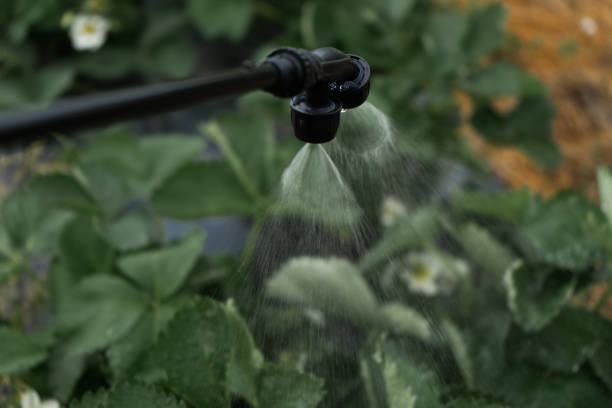
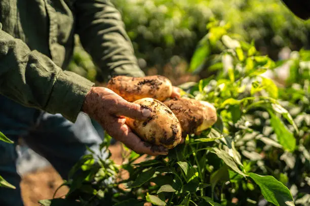
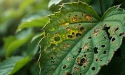

Learn about agriculture, irrigation, crops, and plant health
Jordan's agricultural sector relies heavily on modern irrigation systems to provide water efficiently. Irrigation accounts for approximately ,85% of total water consumption, with various methods used, such as drip irrigation, sprinkler irrigation, and surface irrigation.


Discover the variety of crops and native plants cultivated in Jordan, from staple grains and fresh vegetables to rare and medicinal plants, highlighting the country's rich agricultural diversity.
Vertical farming is a modern method of growing crops in vertical layers, using less space and fewer water resources.
Plants are susceptible to many diseases, such as fungi, bacteria, and viruses, which lead to reduced crop yield and quality.
Prevention depends on good management and the selection of resistant varieties.
